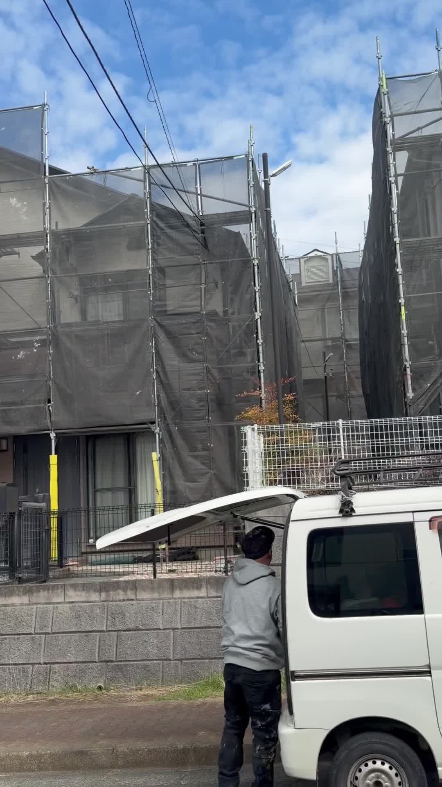

2年前の雨漏り修理が8棟の仕事に繋がった😭

今、めちゃくちゃ嬉しいことになってます😊
8棟並んで、全部うちで工事させてもらってる✨
この現場、
実は2年前に雨漏り修理したお客様なんです。
最初は普通に、
「雨漏りしてるから見てほしい」
って連絡もらって。
すぐ駆けつけて、修理して、
その時は「ありがとうございました！」で終わり。
でもね、私、
工事終わったらそれで終わりじゃなくて、
定期的に「その後どうですか？」って
顔出すようにしてたんです。
別に次の仕事欲しいからとかじゃなくて、
ちゃんと直ってるか心配だから。
そしたらある日、
お客様から連絡きて。
「上原さん、実は他にも物件あるんだけど、
全部お願いできる？」
って😭
聞いたら、
そのお客様、地主さんで、
物件いっぱい持ってる方だったんです✨
まさか2年前の1件の雨漏り修理が、
こんなに大きな信頼に繋がるなんて。
もう、涙出そうでした😭
8棟並びって、正直めちゃくちゃ大変です。
でも、
「あの時、上原さんに頼んでよかった」
って思ってもらえるように、
職人さんたちと毎日頑張ってます💪
今回の案件で、改めて思ったこと。
お客様を大切にすることって、
結局、自分たちに返ってくるんだなって。
目先の利益じゃなくて、
ちゃんと一人ひとりのお客様と向き合うこと。
それが、結果的に次の仕事に繋がる。
これからも、
一件一件、丁寧に向き合っていきます！
明日も8棟の現場、気合い入れて頑張ります✨